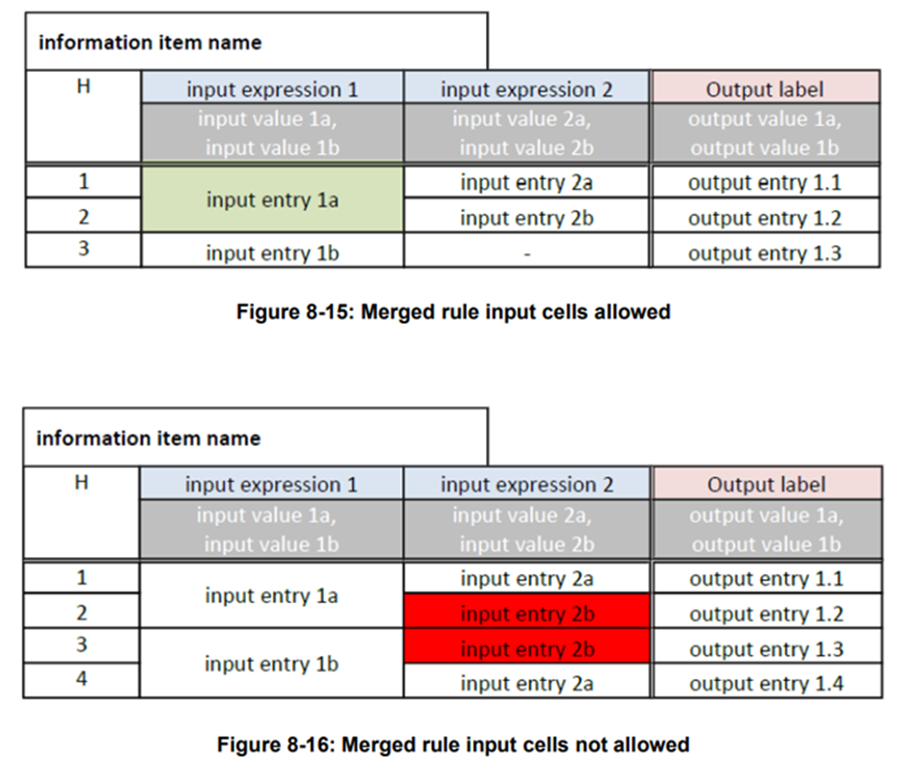
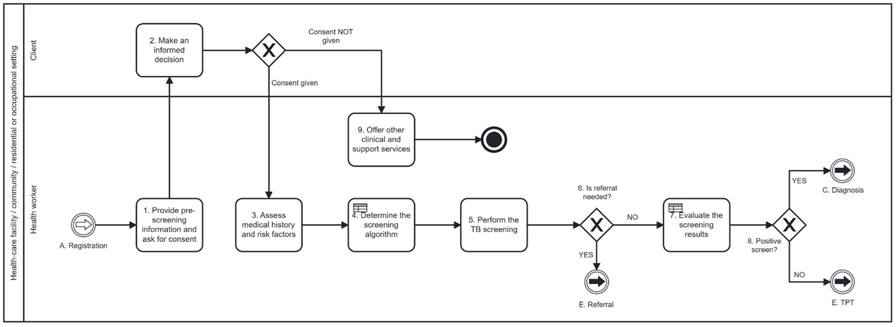

SMART Guidelines Starter Kit, published by WHO. This guide is not an authorized publication; it is the continuous build for version 2.1.0 built by the FHIR (HL7® FHIR® Standard) CI Build. This version is based on the current content of https://github.com/WorldHealthOrganization/smart-ig-starter-kit/tree/126/merge and changes regularly. See the Directory of published versions
L2 DAK FAQ
This section gathers the frequently asked questions and provides answers to them based on WHO's experience with developing DAKs.
General
N/A
Health interventions and recommendations
N/A
User scenarios
- Shall I always try to include common business processes and workflows in the user scenarios, for example activities related to the "Registration" or "Referral" business processes?
- it is not mandatory to include common business processes and workflows, such as “Registration or “Referral”, in the DAK. If the L1 guidance for the health area being worked on in the DAK does not refer to such workflows, then activities related to those business processes can be excluded from the user scenarios. However, you should incorporate common workflows, such as “Registration or “Referral”, in the clinical-based user scenarios.
Generic personas
N/A
Generic business processes and workflows
N/A
Core data elements
- How to handle data elements collected in a form and reused in other activities/workflows?
- data collection forms are an important source of data elements. In the case when the same form is used multiple times, for example, to edit/validate the data in later workflow activities, key data elements must be collected only once. The DAKs adhere to the "collect once, use many times” principle, therefore data elements are only listed under the activity and business process they are first collected in. Only the new data elements that need to be collected in subsequent activities and/or business processes are listed. This approach assumes that health workers will have access to modify data elements present in prior business processes, eliminating the need to repeat data elements. In instances where data elements can be collected in different, disconnected business processes, making it difficult to determine the initial collection point, such data elements should be included in the "[health domain abbreviation].Common" tab of the data dictionary.
Decision-support logic
- Can rows with the same input entry be merged?
- yes, rows with the same input entry can be merged as per the below criteria:


One of the rules of the table has as output “TB screening result” = “Inconclusive”, therefore there is no exact path forward in the workflow if this rule matches. The L1 guidance recommends in this case exploring alternate diagnoses to rule out TB, before assessing the client for TB preventive treatment (TPT). In this case, the “System action” column could be used to give instructions to the system: “Recommend alternate diagnoses to rule out TB”. This allows the system to create an output and offers useful instructions for L3 implementers. The content in this column should align with the general message from the “Guidance for the health worker” column.
Scheduling logic
N/A
N/A
High-level functional and non-functional requirements
- Are interoperability requirements functional requirements or non-functional requirements?
- the interoperability requirements are usually categorized as non-functional requirements, but they are often interlinked with other requirements as well. The key becomes the thinking about how your system/application interacts with other systems/applications and what standards need to be used to ensure a smooth exchange of information.